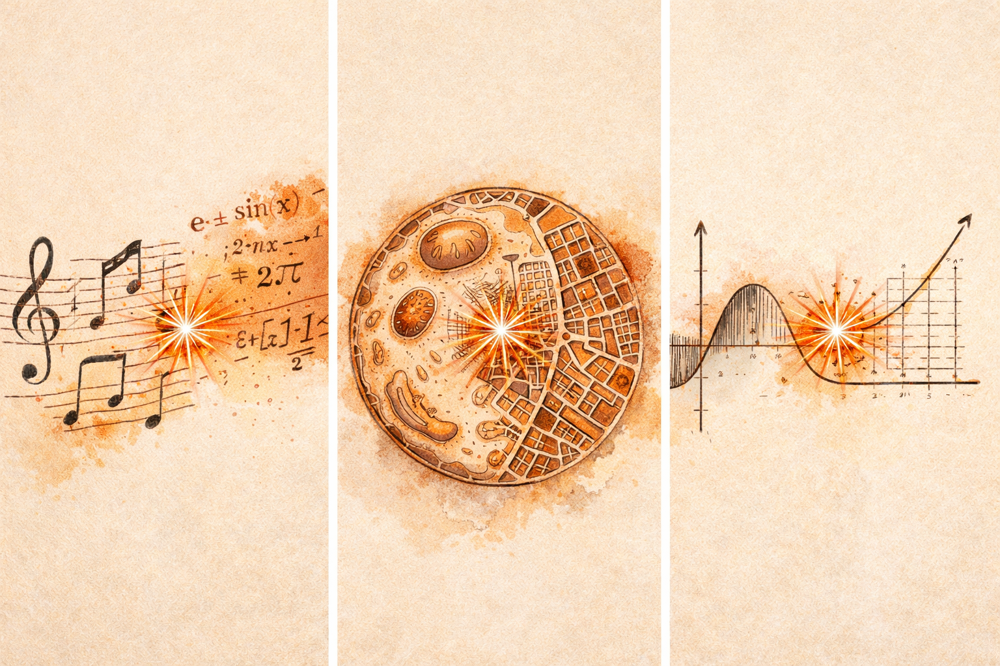

Physics, Chemistry, History, Mathematics, Biology, Economics, Geography, English Literature, Political Science. Studied separately, each in its own world. The conversation happening between them? Nobody showed us that.
That conversation is where the best thinking lives.
Every weekday, Eneth brings you one unexpected connection, from across the full map of human knowledge.
Something you can't unsee.
Darwin was stuck.
He had years of observations from the Beagle voyage. Species changed over time. He could see it. But he could not explain the mechanism.
Then he read Thomas Malthus, a political economist writing about population, scarcity, and the pressures that follow when resources are limited. Malthus argued that human populations grow faster than food supply, creating relentless competition for survival.
Darwin saw it instantly.
That same pressure applied to every living species. Organisms multiply faster than resources allow. The ones with favourable variations survive. The rest don't.
He wrote in his notebook that he had "at last got a theory by which to work." Natural selection. One of the most transformative ideas in biology. It did not come from biology. It came from a book about economics that he picked up for amusement.
The knowledge nobody taught you · The thinking nobody showed you
Hidden patterns · Clearer thinking · Better decisions · New ideas
A sharper mind for today and tomorrow
Everything you've ever studied is connected. Every subject that once felt abstract has a direct line to something that matters in your world right now.
You just weren't shown the connections.
I come from an engineering background. From a world of equations, systems, proofs.
Then I started reading philosophy. And I kept bumping into familiar names. Descartes. Leibniz. Pascal.
I knew them from mathematics and physics. But here they were again, at the heart of philosophy.
They weren't people who happened to know other things. They were thinkers. For them, the boundaries between disciplines simply didn't exist.
That realization changed how I saw everything.
And I started wondering - when did we stop doing that?
That way of seeing. Holding multiple disciplines together and noticing the connections between them. It's rare because nobody teaches it deliberately.
And the more I sat with this, the more I realized it wasn't just about connections between disciplines.
It was about how we think. How we break down complex problems. How we question what we think we know. How we reason when the answer isn't clear.
When I looked around, I realized that the people who develop these ways of thinking usually do so accidentally. Through unusual careers. Through environments that force them to think across everything at once. Through the right education at the right moment.
But most people never get that forcing function.
This starts long before the workplace.
In school, we memorize and reproduce. By the time we enter the more practical and professional world, we may have years of knowledge but almost no practice in using it well.
Nobody ever showed us the conversation happening between the things we already know.
The cost of that is real.
You make decisions with one lens when more than one would serve you better.
You solve problems inside one discipline when the answer was sitting in another.
You read widely but the dots never connect.
You sense something is missing. You just can't name it.
And then came AI.
AI is an extraordinary answer machine. It knows more facts than any human ever will.
But asking the question nobody thought to ask. Finding the connection that lives in the unmapped space between disciplines. Questioning the assumption everyone in the room has accepted. Thinking clearly when the answer isn't certain.
That still requires a human mind.
In a world where AI can answer almost anything, the ability to ask the right question, see the right connection, and think clearly under uncertainty becomes more valuable.
What you find here today is the beginning.
One unexpected connection from across human knowledge, every weekday. That is where we start. There is much more to come.
Our hope is simple. That each day, it shifts something in you. That over time the shifts compound into something larger.
A mind that works differently from the one you had before.
A mind that thinks to the nth degree.
Welcome to Eneth.